The Student’s Elements of Geology
Classification of the Old Red Sandstone in Scotland and in Devonshire. — Upper Old Red Sandstone in Scotland, with Fish and Plants. — Middle Old Red Sandstone. — Classification of the Ichthyolites of the Old Red, and their Relation to Living Types. — Lower Old Red Sandstone, with Cephalaspis and Pterygotus. — Marine or Devonian Type of Old Red Sandstone. — Table of Devonian Series. — Upper Devonian Rocks and Fossils. — Middle. — Lower. — Eifel Limestone of Germany. — Devonian of Russia. — Devonian Strata of the United States and Canada. — Devonian Plants and Insects of Canada.
Classification of the two Types of Old Red Sandstone.—We have seen that the Carboniferous strata are surmounted by the Permian and Trias, both originally included in England under the name “New Red Sandstone,” from the prevailing red colour of the strata. Under the coal came other red sandstones and shales which were distinguished by the title of “Old Red Sandstone.” Afterwards the name of “Devonian” was given by Sir R. Murchison and Professor Sedgwick to marine fossiliferous strata which, in the south of England, occupy a similar position between the overlying coal and the underlying Silurian formations.
It may be truly said that in the British Isles the rocks of this age present themselves in their mineral aspect, and even to some extent in their fossil contents, under two very different forms; the one as distinct from the other as are often lacustrine or fluviatile from marine strata. It has indeed been suggested that by far the greater part of the deposits belonging to what may be termed the Old Red Sandstone type are of fresh-water origin. The number of land-plants, the character of the fishes, and the fact that the only shell yet discovered belongs to the genus Anodonta, must be allowed to lend no small countenance to this opinion. In this case the difficulty of classification when the strata of this type are compared in different regions, even where they are contiguous, may arise partly from their having been formed in distinct hydrographical basins, or in the neighbourhood of the land in shallow parts of the sea into which large bodies of fresh-water entered, and where no marine mollusca or corals could flourish. Under such geographical conditions the limited extent of some kinds of sediment, as well as the
absence of those marine forms by which we are able to identify or contrast marine formations, may be explained, while the great thickness of the rocks, which might seem at first sight to require a corresponding depth of water, can often be shown to have been due to the gradual sinking down of the bottom of the estuary or sea where the sediment was accumulated.
Another active cause of local variation in Scotland was the frequency of contemporaneous volcanic eruptions; some of the rocks derived from this source, as between the Grampians and the Tay, having formed islands in the sea, and having been converted into shingle and conglomerate, before the upper portions of the red shales and sandstones were superimposed.
The dearth of calcareous matter over wide areas is characteristic of the Old Red Sandstone. This is, no doubt, in great part due to the absence of shells and corals; but why should these be so generally wanting in all sedimentary rocks the colour of which is determined by the red oxide of iron? Some geologists are of opinion that the waters impregnated with this oxide were prejudicial to living beings, others that strata permeated with this oxide would not preserve such fossil remains.
In regard to the two types, the Old Red Sandstone and the Devonian, I shall first treat of them separately, and then allude to the proofs of their having been to a great extent contemporaneous. That they constitute a series of rocks intermediate in date between the lowest Carboniferous and the uppermost Silurian is not disputed by the ablest geologists; and it can no longer be contended that the Upper, Middle, and Lower Old Red Sandstone preceded in date the three divisions to which, by aid of the marine shells, the Devonian rocks have been referred, while, on the other hand, we have not yet data for enabling us to affirm to what extent the subdivisions of the one series may be the equivalents in time of those of the other.
Upper Old Red Sandstone.—The highest beds of the series in Scotland, lying immediately below the coal in Fife, are composed of yellow sandstone well seen at Dura Den, near Coupar, in Fife, where, although the strata contain no mollusca, fish have been found abundantly, and have been referred to the genera Holoptychius, Pamphractus, Glyptopomus, and many others. In the county of Cork, in Ireland, a similar yellow sandstone occurs containing fish of genera characteristic of the Scotch Old Red Sandstone, as for example Coccosteus (a form represented by many species in the
Old Red Sandstone and by one only in the Carboniferous group), and Glytolepis and Asterolepis, both exclusively confined to the “Old Red.” In the same Irish sandstone at Kiltorkan has been found an Anodonta or fresh-water mussel, the only shell hitherto discovered in the Old Red Sandstone of the British Isles (see Fig. 494).
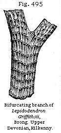 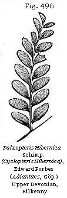In the same formation are found the fern (Fig. 496) and the Lepidodendron (Fig. 495), and other species of plants, some of which, Professor Heer remarks, agree specifically with species from the lower carboniferous beds. This induces him to lean to the opinion long ago advocated by Sir Richard Griffiths, that the yellow sandstone, in spite of its fish remains, should be classed as Lower Carboniferous, an opinion which I am not yet prepared to adopt. Between the Mountain Limestone and the yellow sandstone in the south-west of Ireland there intervenes a formation no less than 5000 feet thick, called the “Carboniferous slate,” and at the base of this, in some places, are local deposits, such as the Glengariff Grits, which appear to be beds of passage between the Carboniferous and Old Red Sandstone groups.
It is a remarkable result of the recent examination of the fossil flora of Bear Island, latitude 74° 30' N., that Professor Heer has described as occurring in that part of the Arctic region (nearly twenty-six degrees to the north of the Irish locality) a flora agreeing in several of its species with that of the yellow sandstones of Ireland. This Bear Island flora is believed by Professor Heer to comprise species of plants some of which ascend even to the higher stages of the European Carboniferous formation, or as high as the Mountain Limestone and Millstone Grit. Palæontologists have long maintained that
the same species which have a wide range in space are also the most persistent in time, which may prepare us to find that some plants having a vast geographical range may also have endured from the period of the Upper Devonian to that of the Millstone Grit.
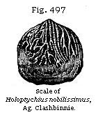Outliers of the Upper “Old Red” occur unconformably on older members of the group, and the formation represented at Whiteness, near Arbroath, a, Fig. 55, may probably be one of these outliers, though the want of organic remains renders this uncertain. It is not improbable that the beds given in this section as Nos. 1, 2, and 3, may all belong to the early part of the period of the Upper Old Red, as some scales of Holoptychius nobilissimus have been found scattered through these beds, No. 2, in Strathmore. Another nearly allied Holoptychius occurs in Dura Den, see Fig. 498 of this fish and also Fig. 497 of one of its scales, as these last are often the only parts met with; being scattered in Forfarshire through red-coloured shales and sandstones, as are scales of a large species of the same genus in a corresponding matrix in Herefordshire.* The number of fish obtained from the British Upper Old Red Sandstone amounts to fifteen species referred to eleven genera.
Sir R. Murchison groups with this upper division of the Old Red of Scotland certain light-red and yellow sandstones and grits which occur in the northernmost part of the mainland, and extend also into the Orkney and Shetland Islands.
* Siluria, 4th ed., p. 265.
They contain Calamites and other plants which agree generically with Carboniferous forms.
Middle Old Red Sandstone.—In the northern part of Scotland there occur a great series of bituminous schists and flagstones, to the fossil fish of which attention was first called by the late Hugh Miller. They were afterwards described by Agassiz, and the rocks containing them were examined by Sir R. Murchison and Professor Sedgwick, in Caithness, Cromarty, Moray, Nairn, Gamrie in Banff, and the Orkneys and Shetlands, in which great numbers of fossil fish have been found. These were at first supposed to be the oldest known vertebrate animals, as in Cromarty the beds in which they occur seem to form the base of the Old Red system resting almost immediately on the crystalline or metamorphic rocks. But in fact these fish-bearing beds, when they are traced from north to south, or to the central parts of Scotland, thin out, so that their relative age to the Lower Old Red Sandstone, presently to be mentioned, was not at first detected, the two formations not appearing in superposition in the same district. In Caithness, however, many hundred feet below the fish-zone of the middle division, remains of Pteraspis were found by Mr. Peach in 1861. This genus has never yet been found in either of the two higher divisions of the Old Red Sandstone, and confirms Sir R. Murchison’s previous suspicion that the rocks in which it occurs belong to the Lower “Old Red,” or agree in age with the Arbroath paving-stone.*
Fossil Fish of the Middle Old Red Sandstone.—The Devonian fish were referred by Agassiz to two of his great orders, namely, the Placoids and Ganoids. Of the first of these, which in the Recent period comprise the shark, the dog-fish, and the ray, no entire skeletons are preserved, but fin-spines, called ichthyodorulites, and teeth occur. On such remains the genera Onchus, Odontacanthus, and Ctenodus, a supposed cestraciont, and some others, have been established.
By far the greater number of the Old Red Sandstone fishes belong to a sub-order of Ganoids instituted by Huxley in 1861, and for which he has proposed the name of Crossopterygidæ,† or the fringe-finned, in consideration of the peculiar manner in which the fin-rays of the paired fins are arranged so as to form a fringe round a central lobe, as in the Polypterus (see a, Fig. 499), a genus of which there are several species now inhabiting the Nile and other African rivers. The reader will at once recognise in Osteolepis (Fig. 500), one of the common fishes of the Old Red Sandstone, many points of
* Siluria, 4th ed., p. 258.
† Abridged from crossotos, a fringe, and
pteryx, a fin.
analogy with Polypterus. They not only agree in the structure of the fin, at first pointed out by Huxley, but also in the position of the pectoral, ventral, and anal fins, and in having an elongated body and rhomboidal scales. On the other hand, the tail is more symmetrical in the recent fish, which has also an apparatus of dorsal finlets of a very abnormal character, both as to number and structure. As to the dorsals of Osteolepis, they are regular in structure and position, having nothing remarkable about them, except that there are two of them, which is comparatively unusual in living fish.
Among the “fringe-finned” Ganoids we find some with rhomboidal scales, such as Osteolepis, Fig. 500; others with cycloidal scales, as Holoptychius, before mentioned (see Fig. 498). In the genera Dipterus and Diplopterus, as Hugh Miller pointed out, and in several other of the fringe-finned genera, as in Gyroptychius and Glyptolepis, the two dorsals are placed far backward, or directly over the ventral and anal fins. The Asterolepis was a ganoid fish of gigantic dimensions. A. Asmusii, Eichwald, a species characteristic of the Old Red Sandstone of Russia, as well as that of Scotland, attained the length of between twenty and thirty feet. It was clothed with strong bony armour, embossed with star-like tubercles, but it had only a cartilaginous skeleton. The mouth was furnished with two rows of teeth, the outer ones small and fish-like, the inner larger and with a reptilian character. The Asterolepis occurs also in the Devonian rocks of North America.
If we except the Placoids already alluded to, and a few other families of doubtful affinities, all the Old Red Sandstone fishes are Ganoids, an order so named by Agassiz from the shining outer surface of their scales; but Professor Huxley has also called our attention to the fact that, while a few of the primary and the great majority of the secondary Ganoids resemble the living bony pike, Lepidosteus, or the Amia, genera now found in North American rivers, and one of them, Lepidosteus, extending as far south as Guatemala, the Crossopterygii, or fringe-finned Ichthyolites, of the Old Red are closely related to the African Polypterus, which is represented by five or six species now inhabiting the Nile and the rivers of Senegal. These North American and African Ganoids are quite exceptional in the living creation; they are entirely confined to the northern hemisphere, unless some species of Polypterus range to the south of the line in Africa; and, out of about 9000 living species of fish known to M. Günther, and of which more than 6000 are now preserved in the British Museum, they probably constitute no more than nine.
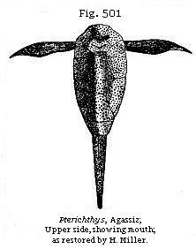If many circumstances favour the theory of the fresh-water origin of the Old Red Sandstone, this view of its nature is not a little confirmed by our finding that it is in Llake Superior and the other inland Canadian seas of fresh water, and in the Mississippi and African rivers, that we at present find those fish which have the nearest affinity to the fossil forms of this ancient formation.
Among the anomalous forms of Old Red fishes not referable to Huxley’s Crossopterygii is the Pterichthys, of which five species have been found in the middle division of the Old Red of Scotland. Some writers have compared their shelly covering to that of Crustaceans, with which, however, they have no real affinity. The wing-like appendages, whence the genus is named, were first supposed by Hugh Miller to be paddles, like those of the turtle; and there can now be no doubt that they do really correspond with the pectoral fins.
The number of species of fish already obtained from the middle division of the Old Red Sandstone in Great Britain is about 70, and the principal genera, besides Osteolepis and Pterichthys, already mentioned, are Glyptolepis, Diplacanthus, Dendrodus, Coccosteus, Cheirancanthus, and Acanthoides.
Lower Old Red Sandstone.—The third or lowest division south of the Grampians consists of grey paving-stone and roofing-slate, with associated red and grey shales; these strata underlie a dense mass of conglomerate. In these grey beds several remarkable fish have been found of the genus named by Agassiz Cephalaspis, or “buckler-headed,” from the extraordinary shield which covers the head (see Fig. 502), and which has often been mistaken for that of a trilobite, such as Asaphus. A species of Pteraspis, of the same family, has also been found by the Reverend Hugh Mitchell in beds of corresponding age in Perthshire; and Mr. Powrie enumerates no less than five genera of the family Acanthodidæ, the spines, scales, and other remains of which have been detected in the grey flaggy sandstones.*
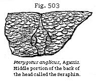In the same formation at Carmylie, in Forfarshire, commonly known as the Arbroath paving-stone, fragments of a huge crustacean have been met with from time to time. They are called by the Scotch quarrymen the “Seraphim,” from the
* Powrie, Geol. Quart. Journ., vol. xx, p. 417.
| 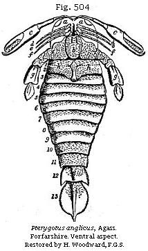 |
|
wing-like form and feather-like ornament of the thoracic appendage, the part most usually met with. Agassiz, having previously referred some of these fragments to the class of fishes, was the first to recognise their crustacean character, and, although at the time unable correctly to determine the true relation of the several parts, he figured the portions on which he founded his opinion, in the first plate of his “Poissons Fossiles du Vieux Grès Rouge.”
A restoration in correct proportion to the size of the fragments of P. anglicus (Fig. 504), from the Lower Old Red Sandstone of Perthshire and Forfarshire, would give us a creature measuring from five to six feet in length, and more than one foot across.
The largest crustaceans living at the present day are the Inachus Kaempferi, of De Haan, from Japan (a brachyurous or short-tailed crab), chiefly remarkable for the extraordinary length of its limbs; the fore-arm measuring four feet in length, and the others in proportion, so that it covers about 25 square feet of ground; and the Limulus Moluccanus, the great King Crab of China and the Eastern seas, which, when adult, measures 1½ foot across its carapace, and is three feet in length.
Besides some species of Pterygotus, several of the allied genus Eurypterus occur in the Lower Old Red Sandstone, and with them the remains of grass-like plants so abundant in Forfarshire and Kincardineshire as to be useful to the geologist by enabling him to identify the inferior strata at distant points. Some botanists have suggested that these
plants may be of the family Fluviales, and of fresh-water genera. They are accompanied by fossils, called “berries” by the quarrymen, which they compared to a compressed blackberry (see Figs. 505, 506), and which were called “Parka” by Dr. Fleming. They are now considered by Mr. Powrie to be the eggs of crustaceans, which is highly probable, for they have not only been found with Pterygotus anglicus in Forfarshire and Perthshire, but also in the Upper Silurian strata of England, in which species of the same genus, Pterygotus, occur.
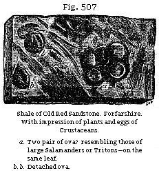The grandest exhibitions, says Sir R. Murchison, of the Old Red Sandstone in England and Wales appear in the escarpments of the Black Mountains and in the Fans of Brecon and Carmarthen, the one 2862, and the other 2590 feet above the sea. The mass of red and brown sandstone in these mountains is estimated at not less than 10,000 feet, clearly intercalated between the Carboniferous and Silurian strata. No shells or corals have ever been found in the whole series, not even where the beds are calcareous, forming irregular courses of concretionary lumps called “corn-stones,” which may be described as mottled red and green earthy limestones. The fishes of this lowest English Old Red are Cephalaspis and Pteraspis, specifically different from species of the same genera which occur in the uppermost Ludlow or Silurian tilestones. Crustaceans also of the genus Eurypterus are met with.
Marine or Devonian Type.—We may now speak of the marine type of the British strata intermediate between the Carboniferous and Silurian, in treating of which we shall find it much more easy to identify the Upper, Middle, and Lower divisions with strata of the same age in other countries. It was not until the year 1836 that Sir R. Murchison and Professor Sedgwick discovered that the culmiferous or anthracitic shales and sandstones of North Devon, several thousand feet thick, belonged to the coal, and that the beds below them, which are of still greater thickness, and which, like the carboniferous strata, had been confounded under the general name “graywacke,” occupied a geological position corresponding to that of the Old Red Sandstone already described. In this reform they were aided by a suggestion of Mr. Lonsdale, who, after studying the Devonshire fossils, perceived that they belonged to a peculiar palæontological type of intermediate character between the Carboniferous and Silurian.
It is in the north of Devon that these formations may best be studied, where they have been divided into an Upper, Middle, and Lower Group, and where, although much contorted and folded, they have for the most part escaped being altered by intrusive trap-rocks and by granite, which in Dartmoor and the more southern parts of the same county have often reduced them to a crystalline or metamorphic state.
| UPPER DEVONIAN OR PILTON GROUP |
(a) Sandy slates and
schists with fossils, 36 species out of 110 common to the
Carboniferous group (Pilton, Barnstaple, etc.), resting on soft
schists in which fossils are very abundant (Croyde, etc.), and
which pass down into (b) Yellow, brown, and red sandstone, with land plants (Cyclopteris, etc.) and marine shells. One zone, characterised by the abundance of cucullæa (Baggy Point, Marwood, Sloly, etc.) resting on hard grey and reddish sandstone and micaceous flags, no fossils yet found (Dulverton, Pickwell, Down, etc.) |
| MIDDLE DEVONIAN OR ILFRACOMBE GROUP. | (a) Green glossy slates of
considerable thickness, no fossils yet recorded from these beds
(Mortenoe, Lee Bay, etc.). (b) Slates and schists, with several irregular courses of limestone containing shells and corals like those of the Plymouth Limestone (Combe Martin, Ilfracombe, etc.). |
| LOWER DEVONIAN OR LYNTON GROUP. | (a) Hard, greenish, red, and purple
sandstone—no fossils yet found (Hangman Hill, etc.). (b) Soft slates with subordinate sandstones—fossils numerous at various horizons—Orthis, Corals, Encrinites, etc. (Valley of Rocks, Lynmouth, etc.). |
The above table exhibits the sequence of the strata or subdivisions as seen both on the sea-coast of the British Channel and in the interior of Devon. It will be seen that
in all main points it agrees with the table drawn up in 1864 for the sixth edition of my “Elements.” Mr. Etheridge* has since published an excellent account of the different subdivisions of the rocks and their fossils, and has also pointed out their relation to the corresponding marine strata of the Continent. The slight modifications introduced in my table since 1864 are the result of a tour made in 1870 in company with Mr. T. Mck. Hughes, when we had the advantage of Mr. Etheridge’s memoir as our guide.
The place of the sandstones of the Foreland is not yet clearly made out, as they are cut off by a great fault and disturbance.
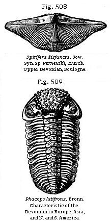Upper Devonian Rocks.—The slates and sandstones of Barnstaple (a and b of the preceding section) contain the shell Spirifera disjuncta, Sowerby (S. Verneuilii, Murch.), (see Fig. 508), which has a very wide range in Europe, Asia Minor, and even China; also Strophalosia caperata, together with the large trilobite Phacops latifrons, Bronn. (See Fig. 509), which is all but world-wide in its distribution. The fossils are numerous, and comprise about 150 species of mollusca, a fifth of which pass up into the overlying Carboniferous rocks. To this Upper Devonian belong a series of limestones and slates well developed at Petherwyn, in Cornwall, where they have yielded 75 species of fossils. The genus of Cephalopoda called Clymenia (Fig. 510) is represented by no less than eleven species, and strata occupying the same position in Germany are called Clymenien-Kalk, or sometimes Cypridinen-Schiefer, on account of the number of minute bivalve shells of the crustacean called Cypridina serrato-striata (Fig. 511), which is found in these beds, in the Rhenish provinces, the Harz, Saxony, and Silesia, as well as in Cornwall and Belgium.
Middle Devonian Rocks.—We come next to the most typical portion of the Devonian system, including the great limestones of Plymouth and Torbay, replete with
shells, trilobites, and corals. Of the corals 51 species are enumerated by Mr. Etheridge, none of which pass into the Carboniferous formation. Among the genera we find Favosites, Heliolites, and Cyathophyllum. The two former genera are very frequent in Silurian rocks: some few even of the species are said to be common to the Devonian and Silurian groups, as, for example, Favosites cervicornis (Fig. 513), one of the commonest of all
the Devonshire fossils. The Cyathophyllum cæspitosum (Fig. 514) and Heliolites pyriformis (Fig. 512) are species peculiar to this formation.
With the above are found no less than eleven genera of stone-lilies or crinoids, some of them, such as Cupressocrinites, distinct from any Carboniferous forms. The mollusks, also, are no less characteristic; of 68 species of Brachiopoda, ten only are common to the Carboniferous Limestone. The Stringocephalus Burtini (Fig. 515) and Uncites Gryphus (Fig. 516) may be mentioned as exclusively Middle Devonian genera, and extremely characteristic of the same division in Belgium. The Stringocephalus is also so abundant in the Middle Devonian of the banks of the Rhine as to have suggested the name of Stringocephalus Limestone.
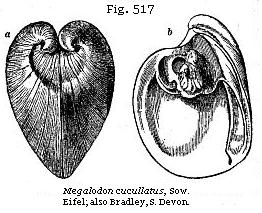The only two species of Brachiopoda common to the Silurian and Devonian formations are Atrypa reticularis (Fig. 532), which seems to have been a cosmopolite species, and Strophomena rhomboidalis.
Among the peculiar lamellibranchiate bivalves common to the Plymouth limestone of Devonshire and the Continent, we find the Megalodon (Fig. 517). There are also twelve genera of Gasteropods which have yielded 36 species, four of which pass to the Carboniferous group, namely Macrocheilus,
Acroculia, Euomphalus, and Murchisonia. Pteropods occur, such as Conularia (Fig. 518), and Cephalopods, such as Cyrtoceras, Gyroceras, Orthoceras, and others, nearly all of genera distinct from those prevailing in the Upper Devonian Limestone, or Clymenien-kalk of the Germans already mentioned. Although but few species of Trilobites occur, the characteristic Bronteus flabellifer (Fig. 519) is far from rare, and all collectors are familiar with its fan-like tail. In this same group, called, as before stated, the Stringocephalus, or Eifel Limestone, in Germany, several fish remains have been detected, and among others the remarkable genus Coccosteus, covered with its tuberculated bony armour; and these ichthyolites serve, as Sir R. Murchison observes (Siluria, p. 362), to identify this middle marine Devonian with the Old Red Sandstone of Britain and Russia.
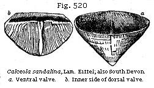Beneath the Eifel Limestone (the great central and typical member of “the Devonian” on the Continent) lie certain schists called by German writers “Calceola-schiefer,” because they contain in abundance a fossil body of very curious structure, Calceola sandalina (Fig. 520), which has been usually considered a brachiopod, but which some naturalists have lately referred to a Goniophyllum, supposing it to be an abnormal form of the order Zoantharia rugosa (see Fig. 474), differing from all other corals in being furnished with a strong operculum. This is by no means a rare fossil in the slaty limestone of South Devon, and, like the Eifel form, is confined to the middle group of this country.
Lower Devonian Rocks.—A great series of sandstones and glossy slates, with Crinoids, Brachiopods, and some corals,
occurring on the coast at Lynmouth and the neighbourhood, and called the Lynton Group (see Table p. 449, form the lowest member of the Devonian in North Devon. Among the 18 species of all classes enumerated by Mr. Etheridge, two-thirds are common to the Middle Devonian, but only one, the ubiquitous Atrypa reticularis, can with certainty be identified with Silurian species. Among the characteristic forms are Alveolites suborbicularis, also common to this formation in the Rhine, and Orthis arcuata, very widely spread in the North Devon localities. But we may expect a large addition to the number of fossils whenever these strata shall have been carefully searched. The Spirifer Sandstone of Sandberger, as exhibited in the rocks bordering the Rhine between Coblentz and Caub, belong to this Lower division, and the same broad-winged Spirifers distinguish the Devonian strata of North America.
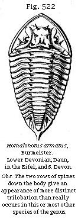Among the Trilobites of this era several large species of Homalonotus (Fig. 522) are conspicuous. The genus is still better known as a Silurian form, but the spinose species appear to belong exclusively to the “Lower Devonian,” and are found in Britain, Europe, and the Cape of Good Hope.
Devonian of Russia.—The Devonian strata of Russia extend, according to Sir R. Murchison, over a region more spacious than the British Isles; and it is remarkable that, where they consist of sandstone like the “Old Red” of Scotland and Central England, they are tenanted by fossil fishes often of the same species and still oftener of the same genera as the British, whereas when they consist of limestone they contain shells similar to those of Devonshire, thus confirming, as Sir Roderick has pointed out, the contemporaneous origin which had been previously assigned to formations exhibiting two very distinct mineral types in different parts of Britain.*
* Murchison’s Siluria, p. 329.
The calcareous and the arenaceous rocks of Russia above alluded to alternate in such a manner as to leave no doubt of their having been deposited in different parts of the same great period.
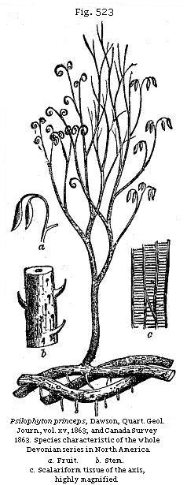Devonian Strata in the United States and Canada.—Between the Carboniferous and Silurian strata there intervenes, in the United States and Canada, a great series of formations referable to the Devonian group, comprising some strata of marine origin abounding in shells and corals, and others of shallow-water and littoral origin in which terrestrial plants abound. The fossils, both of the deep and shallow water strata, are very analogous to those of Europe, the species being in some cases the same. In Eastern Canada Sir W. Logan has pointed out that in the peninsula of Gaspe, south of the estuary of St. Lawrence, a mass of sandstone, conglomerate, and shale referable to this period occurs, rich in vegetable remains, together with some fish-spines. Far down in the sandstones of Gaspe, Dr. Dawson found, in 1869, an entire specimen of the genus Cephalaspis, a form so characteristic, as we have already seen, of the Scotch Lower Old Red Sandstone. Some of the sandstones are ripple-marked, and towards the upper part of the whole series a thin seam of coal has been observed, measuring, together with some associated
carbonaceous shale, about three inches in thickness. It rests on an under-clay in which are the roots of Psilophyton (see Fig. 523). At many other levels rootlets of this same plant have been shown by Principal Dawson to penetrate the clays, and to play the same part as do the rootlets of Stigmaria in the coal formation.
We had already learnt from the works of Göppert, Unger, and Bronn that the European plants of the Devonian epoch resemble generically, with few exceptions, those already known as Carboniferous; and Dr. Dawson, in 1859, enumerated 32 genera and 69 species which he had then obtained from the State of New York and Canada. A perusal of his catalogue,* comprising Coniferæ, Sigillariæ, Calamites, Asterophyllites, Lepidodendra, and ferns of the genera Cyclopteris, Neuropteris, Sphenopteris, and others, together with fruits, such as Cardiocarpum and Trigonocarpum, might dispose geologists to believe that they were presented with a list of Carboniferous fossils, the difference of the species from those of the coal-measures, and even a slight admixture of genera unknown in Europe, being naturally ascribed to geographical distribution and the distance of the New from the Old World. But fortunately the coal formation is fully developed on the other side of the Atlantic, and is singularly like that of Europe, both lithologically and in the species of its fossil plants. There is also the most unequivocal evidence of relative age afforded by superposition, for the Devonian strata in the United States are seen to crop out from beneath the Carboniferous on the borders of Pennsylvania and New York, where both formations are of great thickness.
The number of American Devonian plants has now been raised by Dr. Dawson to 120, to which we may add about 80 from the European flora of the same age, so that already the vegetation of this period is beginning to be nearly half as rich as that of the coal-measures which have been studied for so much longer a time and over so much wider an area. The Psilophyton above alluded to is believed by Dr. Dawson to be a lycopodiaceous plant, branching dichotomously (see P. princeps, Fig. 523), with stems springing from a rhizome, which last has circular areoles, much resembling those of Stigmaria, and like it sending forth cylindrical rootlets. The extreme points of some of the branchlets are rolled up so as to resemble the croziers or circinate vernation of ferns; the leaves or bracts, a, supposed to belong to the same plant, are described by Dawson as having inclosed the fructification. The remains of Psilophyton princeps have been traced through
* Quart. Geol. Journ., vol. xv, p. 477, 1859; also vol. xviii, p. 296, 1862.
all the members of the Devonian series in America, and Dr. Dawson has lately recognised it in specimens of Old Red Sandstone from the north of Scotland.
The monotonous character of the Carboniferous flora might be explained by imagining that we have only the vegetation handed down to us of one set of stations, consisting of wide swampy flats. But Dr. Dawson supposes that the geographical conditions under which the Devonian plants grew were more varied, and had more of an upland character. If so, the limitation of this more ancient flora, represented by so many genera and species, to the gymnospermous and cryptogamous orders, and the absence or extreme rarity of plants of higher grade, lead us naturally to speculate on the theory of progressive development, however difficult it may be to avail ourselves of this explanation, so long as we meet with even a few exceptional cases of what may seem to be monocotyledonous or dicotyledonous exogens.
Devonian Insects of Canada.—The earliest known insects were brought to light in 1865 in the Devonian strata of St. John’s, New Brunswick, and are referred by Mr. Scudder to four species of Neuroptera. One of them is a gigantic Ephemera, and measured five inches in expanse of wing.
Like many other ancient animals, says Dr. Dawson, they show a remarkable union of characters now found in distinct orders of insects, or constitute what have been named “synthetic types.” Of this kind is a stridulating or musical apparatus like that of the cricket in an insect otherwise allied to the Neuroptera. This structure, as Dr. Dawson observes, if rightly interpreted by Mr. Scudder, introduces us to the sounds of the Devonian woods, bringing before our imagination the trill and hum of insect life that enlivened the solitudes of these strange old forests.
{kind=link}
{kind=link}